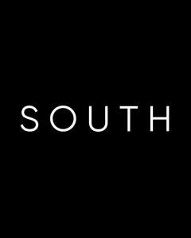

Trade Mark Journal No.2025/018 2 May 2025
UK00004188948 14 April 2025 (44)

- Class 44
- Salons (Hairdressing -); Hairdressing salons; Salon services (Hairdressing -); Hairdressing salon services; Hair salon services; Services of a hair and beauty salon; Nail salon services; Hair dressing salon services; Beauty salon services; Salon services (Beauty -); Hair salon services for women; Tanning salon and solarium services; Beauty salons; Salons (Beauty -); Tanning salons; Hair salon services for children; Hair salon services for men; Pet beauty salon services; Slimming salon services; Airbrush tanning salon services; Spray tanning salon services; Beauty salons for wig cutting; Sun tanning salon services; Tanning (Sun -) salon services; Hairdressing; Skin care salon services; Hair salon services for military service members; Skin care salons; Grooming salon services for pet animals; Barber shop services; Rental of machines and apparatus for use in beauty salons or barbers' shops; Beauty spa services; Manicure and pedicure services; Beautician services; Hair styling services; Hair perming services; Hairdressing services; Shampooing of the hair; Rental of hair styling apparatus; Hair styling; Beauticians (Services of -); Barber services; Services of a barber; Hair braiding services; Spa services; Barber shops; Manicure services; Hair straightening services; Hair tinting services; Cosmetic treatment for the hair; Pedicure services; Pedicurist services; Haircare services; Hair treatment services; Aesthetician services; Hair dyeing services; Hair treatment; Cosmetic laser treatment for hair growth; Cosmetician services; Hair curling services; Providing information relating to beauty salon services; Animal beautician services; Hair restoration services; Hair extension services; Facial beauty treatment services; Hair cutting services; Eyelash perming services; Cosmetic electrolysis for the removal of hair; Hair coloring services; Cosmetic treatment services for the body, face and hair; Hair colouring services; Services for the care of the hair; Hair care services; Medical spa services.
No Split Ends Ltd